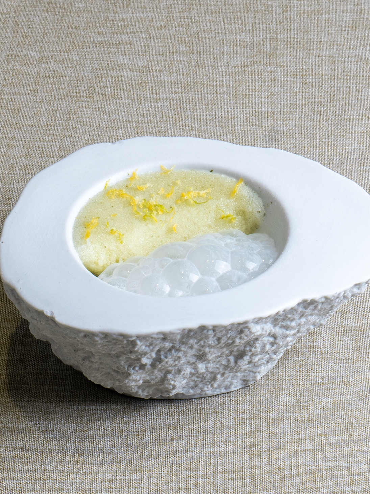
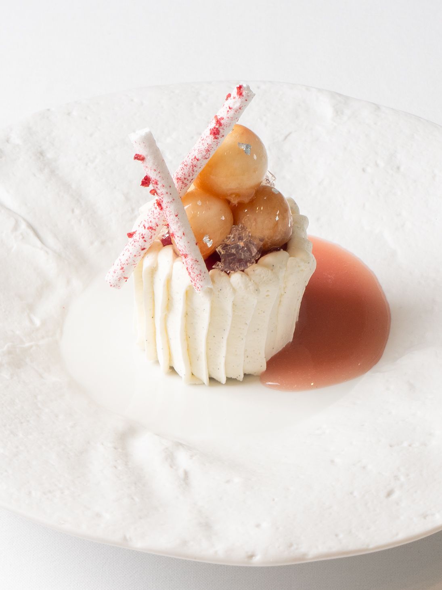
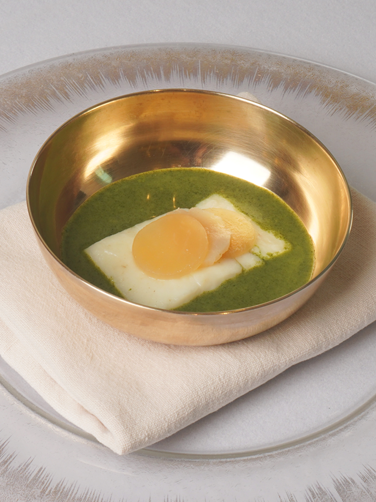
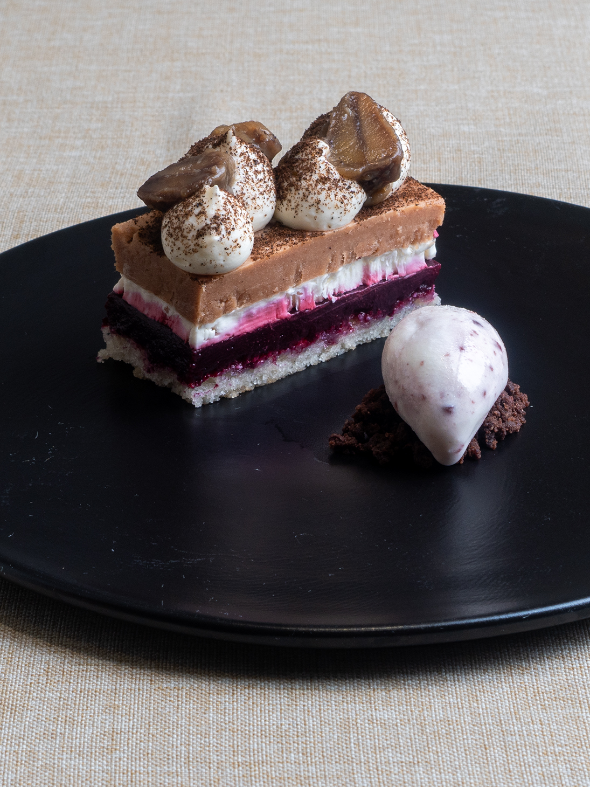
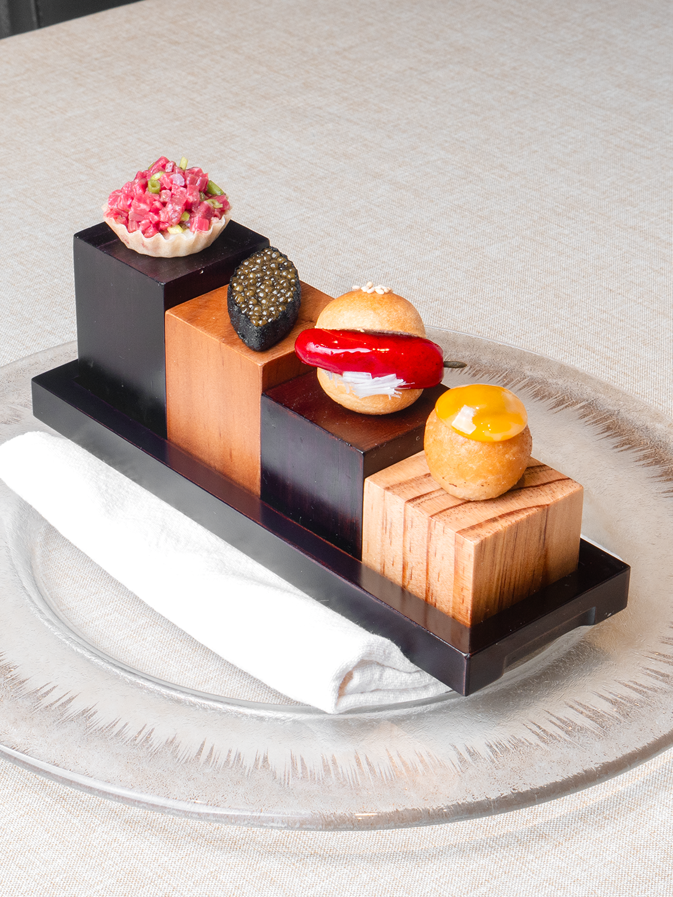

쵸이닷
모수
비아 톨레도 파스타바
610 Magnolia
코스 요리

시소 배
시소, 청사과,
먹골배, 민트를 곁들인 애피타이저.

라벤더 피치
라벤더 향과 복숭아 풍미가 어우러진 향긋한 디저트.

미역국
미역국을 갈고
그 위에 갈치와 무를 곁들인 요리.
수제비
매우 중요한 마늘,
백합과 카푸토 프레스카 밀을 사용한 요리.

몽블랑
밤크림, 체리, 아몬드를 이용한 고소한 디저트.

주전부리
육회, 알밥, 돼지갈비, 씨앗호떡을 현대적으로 재해석한 애피타이저.
예약